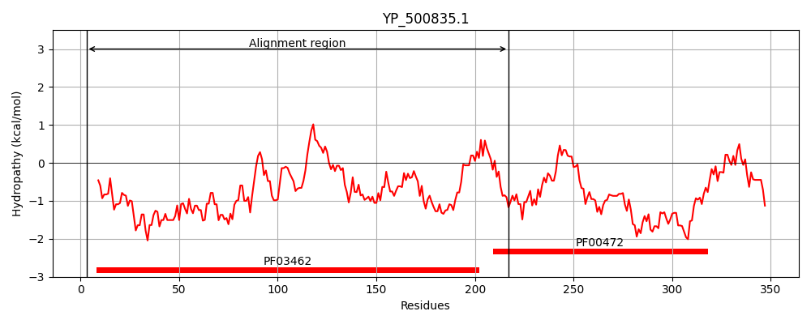
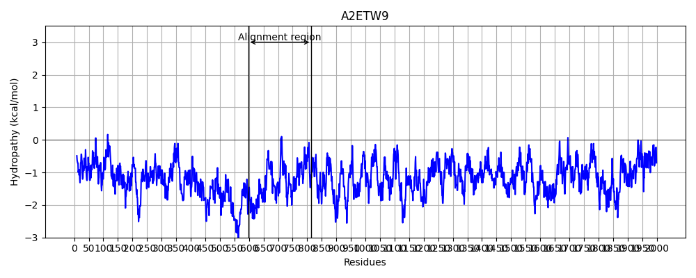
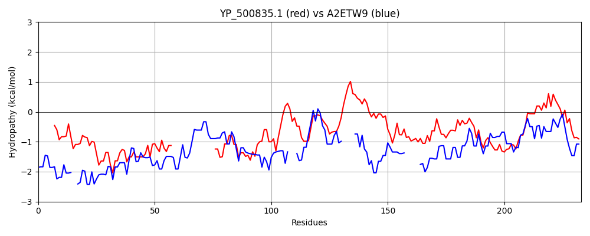

Hit Accession: A2ETW9
Hit TCID: 1.C.105.2.2
Hit Description: gnl|BL_ORD_ID|249 gnl|TC-DB|A2ETW9|1.C.105.2.2 Viral A-type inclusion protein, putative OS=Trichomonas vaginalis GN=TVAG_192230 PE=4 SV=1
Mach Len: 233
e:0.000007
Query TMS Count : 0
Hit TMS Count: 0
TMS-Overlap Score: 0.000000
Predicted Substrates:CHEBI:3473;cation
BLAST Alignment:
Score: 112 , Bit scores: 47 bits, E-value: 6.7e-06, Alignment length: 233, Percentage identity: 19
Query: 3 DQLDIVEERYEQLNELLSDPDVVNDSDKLRKYSKEQADLQKTVDVYRNYKAKKEELAD------------------IEEMLSETDDKEEVEMLKEESNGIKAELPNLEEELKILLIPKDPNDDKDVIVEIRAAAGGDEAAIFAGDLMRMYSKYAESQGFKTEIVEASESDHGGYKEISFSVSGNGAYSKLKFENGAHRVQRVPETESGGRIHTSTATVAVLPEVEDVEIEIRN 217
D+ D + ++ E+L E + +ND+++LRK K + K + K+ E D ++E + E +D E +E LK+E +K E N + I + +D +V++++ DE + +L ++ + Y E Q + S+ + KE + G + + + E+ + + + + +S+ +A+ E+++++ +I N
Sbjct: 598 DEADKLRKKIEELKE--KQQNQINDNEELRKEIKSSEEKMKEIQSENEILKKQIEKEDENSSNISDDLQKLVNKSLVKESIDENNDVETIENLKKEIEDLKKEKDNFD---SISIENEDLRSQVEVLIKVE-----DERNQMSEELEKLRANYNELQS------QISKQNFENNKETIEKLIGEKSKLQEELESIKNELDSIQVEKIESENESSSKIIALTEEIDELKNQINN 814 | Protein Hydropathy Plots: |
|---|
|  |  |
Pairwise Alignment-Hydropathy Plot:
|
|---|
|  |